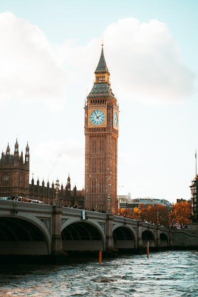

I was lucky enough to visit Europe last year and wanted to share some of my experiences and photos
Some of the countries I visited were:
Discover more about what we saw in each country!

I spent a lot of time in the UK, and travelled around as much as I could. Obviously, London was amazing, but there were plenty of other highlights!
We visited lots of churches and castles. The UK is filled with so many historic sights that you could spend years trying to see them all.
We loved Italy! From the ancient ruins to the beautiful scenery and delicious food, we still have many wonderful memories.
Greece was a stunning surprise. We stayed in Crete for a week and were seduced by the scenery, history and the sheer friendliness of the locals.
We also spent time in Athens, marvelling at many of the ancient ruins.
We hit France in the middle of a heat-wave, and spent a lot of time either indoors or hiding in the shade.
Paris was wonderful, and we enjoyed walking along the banks of River Seine, plus seeing all the famous sights.
We also drove down to Mont St Michel and visited the beaches of Normandy.